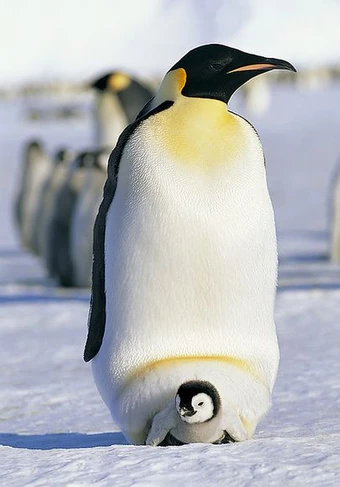

Sobre los Pingüinos

Si te gustan los pingüinos... Aquí encontrarás todo lo que necesitas saber sobre ellos.
Los pingüinos son aves marinas que no pueden volar, pero son excelentes nadadores.
Viven principalmente en el hemisferio sur y se alimentan de peces, krill y otros pequeños animales marinos.
Explora Pingüiland
Sus especies
Conoce los diferentes tipos de pingüinos que existen en el planeta.
Su hábitat
Descubre los lugares fríos y las costas donde viven estas aves.
Su alimentación
Aprende qué comen los pingüinos y cómo consiguen su alimento.
¿Sabías que...?
Los pingüinos son capaces de pasar mucho tiempo bajo el agua buscando comida y nadan utilizando sus alas como aletas.
¡Hay muchas más curiosidades esperándote en nuestra sección de curiosidades!
Descubrir curiosidades